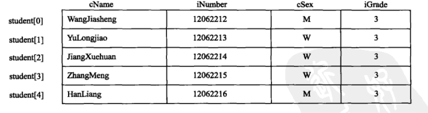

结构体是一种构造类型，由若干个成员组成，成员可以是基本数据类型，或是另一个结构体
声明结构体
struct 结构体名
{
成员列表
};结构体名表示结构的类型名。
声明一个结构体表示创建一种新的类型名（自定义数据类型），然后用类型名定义变量。
struct Product
{
char name[10];
char shape[10];
char color[10];
float price;
}使用结构体定义变量有三种方式
第一种：声明结构体类型，再定义变量
struct Product p1;
struct Product p2;p1和p2是结构体变量名，这两个变量具有相同的结构
类比：
类型名 变量名
int a;
| |
struct Product p;struct Product整体表示一种数据类型
定义结构体变量后，系统会为其分配内存单元
第二种：声明结构体类型时，同时定义变量(可以定义多个变量)
struct 结构体名
{
成员列表
} 变量名列表;example:
struct Product
{
char name[10];
char shape[10];
char color[10];
float price;
} p1, p2;第三种：直接定义结构体类型变量（匿名结构体，没有结构体名称）
struct
{
成员列表
} 成员变量;example：
struct
{
char name[10];
char shape[10];
char color[10];
float price;
} p1, p2;类型和变量时不同的：
结构体成员也可以时结构体类型变量：
struct date
{
int year;
int month;
int day;
};
struct student
{
char name[20];
char gender;
int age;
// 结构体类型变量
struct date birthday;
};结构体变量的引用
结构体变量名.成员名example:
p1.name = "IceBox";
p2.price = 2000;如果成员本身又属于另一个结构体类型，需要使用多个成员运算符
struct student s;
s.birthday.year = 1986;
s.birthday.month = 11;
s.birthday.day = 6;不仅可以对结构体变量成员的地址进行引用，还可以对结构体变量的地址进行引用
scanf("%d", &p1.price);
printf("%O", &p1); // 输出p1的首地址结构体类型的初始化
struct Student
{
char name[10];
char gender;
int grade;
} student = { "Felix", "m", 4 };注意：每一个数据要与结构体的成员列表的顺序一样。
定义结构体数组
struct 结构体名
{
成员列表
}数组名;example:
struct Student
{
char name[20];
int code;
char gender;
int grade;
} student[5];这种方式是声明结构体类型的同时定义结构体数组。也可以先声明结构体类型，再定义变量
struct Student student[5];或直接定义结构体数组：
struct
{
char name[20];
int code;
char gender;
int grade;
} student[5];以上定义了一个数组，其中元素为struct Student类型的数据，每个数据中又有4个成员变量。看图：

结构体数组的初始化
struct 结构体名
{
成员列表
} 数组名 = {初始值列表};example:
struct Student
{
char name[20];
int code;
char gender;
int grade;
} student[5] = {
{"关羽", 192829, 'M', 3},
{"张飞", 82873, 'M', 2},
{"赵云", 827348, 'M', 4},
{"黄忠", 9238347, 'M', 4},
{"刘备", 983784, 'M', 5}
};为数组进行初始化时，最外层的大括号列出数组的元素，因为每个元素都是结构体类型，所以每个元素也使用大括号，其中包含每一个结构体成员数据。
定义结构体数组时，也可以先声明结构体类型，再定义结构体数组。
struct Student student[5] = {
{"关羽", 192829, 'M', 3},
{"张飞", 82873, 'M', 2},
{"赵云", 827348, 'M', 4},
{"黄忠", 9238347, 'M', 4},
{"刘备", 983784, 'M', 5}
};一个指向变量的指针，表示变量所占用内存中的起始地址。如果一个指针指向结构体变量，则该指针指向的时结构体变量的起始地址。
定义结构体指针：
结构体类型 *指针名;example:
// 指向struct Student结构类型的pStudent指针变量
struct Student *pStudent;使用指向结构体变量的指针访问成员有两种方法：
第一种：使用点运算符引用结构体成员
// 一定要使用括号，因为点运算符的优先级最高
(*pStudent).成员名
// example
(*pStudent).code = 9837849;第二种：使用指向运算符引用结构体成员
pStudent->成员名;
// example
pStudent->code = 393848;如果student是结构体变量，pStudent是指向结构体变量的指针，以下三种效果是等价的：
student.成员名;
(*pStudent).成员名;
pStudent->成员名;指向结构体数组的指针
结构体指针变量不但可以指向一个结构体变量，还可以指向结构体数组，此时指针变量的值就是结构体数组的首地址。
结构体指针变量可以直接指向结构体数组中的元素，这时指针变量的值就是该结构体数组元素的首地址。
// 假设：struct Student student[5];
struct Student *pStudent;
// 指向数组的首地址
pStudent = student;数组不使用下标时，表示数组的第一个元素的地址，所以指针指向数组的首地址。 如果想利用指针指向第3个元素，则在数组名后附加下标，然后在数组名前使用取地址符号&
pStudent = &student[2];结构体作为函数参数
使用结构体作为函数参数有3种形式：
第一种：使用结构体变量作为函数的参数
使用结构体变量的作为函数的实参时，采取的是"值传递"，会将结构体变量所占内存单元的内容全部顺序传递给形参，形参也必须是同类型的结构体变量
void display(struct Student stu);在形参位置使用结构体变量，但是函数调用期间，形参也要占用内存单元，这种传递方式在空间和时间上开销都比较大。
根据函数参数传值方式，如果在函数内部修改了变量中成员的值，则改变的值不会返回到主调函数中。
第二种：使用结构体变量的指针作为参数
在使用结构体变量作为函数的参数时，传值过程中空间和时间开销大，可以使用结构体变量的指针作为函数的参数进行传递。
在使用结构体变量的指针时，只是将结构体变量的首地址进行传递，并没有将变量的副本进行传递。
void display(struct Student *stu);因为这里传递的变量时地址，如果在函数中改变成员中的数据，那么返回主调函数时变量会发生改变。
#include <stdio.h>
struct Student {
char name[20];
float score[30];
} student = { "刘备", 98.39f, 89.0, 93.5f };
void display(struct Student *s) {
printf("-------------以下是学生信息-------------\n");
printf("姓名： %s\n", s->name);
printf("数学成绩： %.2f\n", s->score[2]);
// 修改了数组元素的值
s->score[2] = 90.2f;
}
int main(int argc, char const *argv[]) {
struct Student *pStudent;
pStudent = &student;
display(pStudent);
// 也可以直接传递结构体变量的地址作为参数
// display(&student);
// 主调函数中，结构体成员的值发生了改变
printf("修改后的数学成绩： %.2f\n", pStudent->score[2]);
return 0;
}